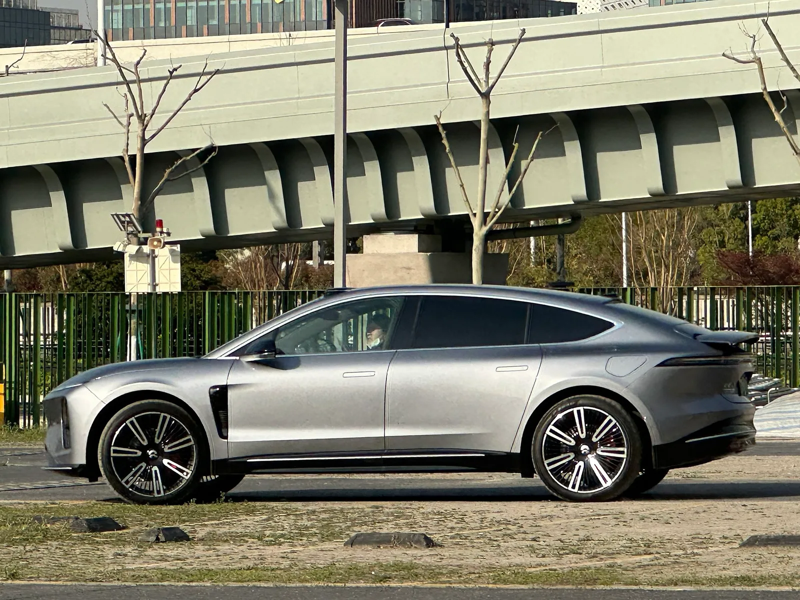

▲ 니오의 자율주행 R&D를 총괄해온 인물이 로보틱스로 향했다 ⓒ Wikimedia Commons
니오의 자율주행 R&D를 총괄하는 런사오칭 수석부사장이 로보틱스 회사를 세운 것으로 보도됐습니다.
그는 ResNet 논문의 공동 저자입니다. 2016년 CVPR 최우수 논문상을 받았고, 컴퓨터 비전 분야에서 가장 많이 인용된 논문 중 하나입니다.
그리고 이건 개인의 이직이 아닙니다. 같은 이동이 반복되고 있습니다.
1. 런사오칭은 누구인가
| 시기 | 내용 |
|---|---|
| 학위 | 중국과학기술대 + 마이크로소프트 리서치 아시아(MSRA) 공동 박사 |
| 연구 | ResNet 공동 저자 — CVPR 2016 최우수 논문 |
| 2016년 | 모멘타 공동창업, R&D 디렉터 |
| 2020년 | 니오 합류 — 수석전문가·부사장보 |
| 2023년 | 부사장 승진 |
| 2026년 | 수석부사장 |
ResNet은 딥러닝의 방향을 바꾼 연구입니다. 신경망을 깊게 쌓으면 학습이 오히려 나빠지는 문제를 잔차 연결(residual connection)로 해결했습니다.
지금 쓰이는 이미지 인식 모델 대부분이 이 구조를 기반으로 합니다. 자율주행의 카메라 인식도 여기서 출발합니다.
모멘타 공동창업 이력도 중요합니다. 모멘타는 현재 중국에서 완성차에 자율주행 소프트웨어를 공급하는 주요 업체입니다. GAC 아이온 레이 7, 뷰익 일렉트라 L7, BMW 중국 전용 iX3에 모멘타 시스템이 들어갑니다.
2. 보도된 내용과 확인되지 않은 것
| 항목 | 상태 |
|---|---|
| 보도 매체·시점 | 레드프로브, 2026년 8월 21일 |
| 내용 | 체화 로보틱스 회사 설립, 이미 투자를 확보했을 가능성 |
| 회사명 | 미공개 |
| 투자 규모 | 미공개 |
| 니오 내 역할 변화 | 보도에 언급 없음 |
| 니오의 공식 입장 | 없음 |
퇴사가 확인된 것이 아닙니다. 런사오칭은 2025년 9월에도 중국과기대 AI 연구소에 합류하면서 니오 직책을 유지했고, 당시 "니오 업무에 영향을 주지 않는다"고 밝힌 바 있습니다.
이번에도 겸직 형태일 가능성이 있습니다. 다만 창업은 연구소 합류와 성격이 다릅니다.

▲ 니오는 공식 입장을 내지 않았고, 퇴사도 확인되지 않았다
3. 반복되는 이동
| 인물 | 전 직책 | 이동처 |
|---|---|---|
| 리리윈 | 샤오펑 자율주행 총괄 | EngineAI 로보틱스 (2026년) |
| 랑셴펑 | 리 오토 스마트드라이빙 총괄 | 쿤룬싱 로보틱스 공동창업 |
| 런사오칭 | 니오 자율주행 R&D 총괄 | 체화 로보틱스 창업(보도) |
중국 3대 전기차 스타트업의 자율주행 책임자가 모두 로보틱스로 향했습니다. 우연으로 보기 어려운 패턴입니다.
4. 왜 로봇인가 — 기술 스택이 같다
| 기술 | 자율주행에서 | 로봇에서 |
|---|---|---|
| 시각 인식 | 차선·보행자·신호 인식 | 물체·환경 인식 |
| 월드 모델 | 주변 상황의 3차원 재구성 | 작업 공간 이해 |
| 모션 플래닝 | 경로·조향·가감속 계획 | 팔·다리 동작 계획 |
| 강화학습 | 주행 정책 학습 | 조작 정책 학습 |
| 대규모 데이터 폐루프 | 주행 데이터 수집·재학습 | 작업 데이터 수집·재학습 |
다섯 항목이 그대로 겹칩니다. "체화 로보틱스(embodied robotics)"는 물리적 몸을 가진 AI가 환경과 상호작용하며 학습하는 분야입니다. 자율주행차는 바퀴 달린 체화 AI에 가깝습니다.
그래서 자율주행 책임자는 로보틱스 회사에서 가장 값이 나가는 인재가 됩니다. 새로 배울 것이 적고, 대규모 데이터 파이프라인을 실제로 굴려본 경험이 있습니다.
5. 완성차 업계에 어떤 의미인가
| 측면 | 내용 |
|---|---|
| 단기 | 핵심 인력 이탈 시 개발 로드맵에 공백 |
| 인건비 | 로보틱스와의 인재 경쟁으로 보상 수준이 올라간다 |
| 내재화 부담 | 자체 개발이 어려워지면 외부 공급 의존이 커진다 |
| 역방향 기회 | 완성차가 로보틱스로 사업을 넓히는 경로도 열린다 |
세 번째 항목이 이미 현실입니다. GAC 아이온 레이 7은 모터·브레이크·라이다를 화웨이에서 받고, BMW 중국 전용 iX3는 모멘타 주행보조를 씁니다. 완성차가 자율주행을 직접 만들지 않는 사례가 늘고 있습니다.
네 번째 항목도 함께 봐야 합니다. 현대차그룹은 보스턴 다이내믹스를 보유하고 있고, 테슬라는 옵티머스를 개발 중입니다. 자율주행 조직이 로봇으로 확장되는 흐름은 완성차 안에서도 진행되고 있습니다.

▲ 자율주행과 로보틱스는 시각 인식·월드 모델·강화학습을 공유한다

▲ 니오는 자율주행을 자체 개발해온 대표적 중국 전기차 업체다
6. 정리
니오 수석부사장이자 자율주행 R&D 총괄인 런사오칭이 체화 로보틱스 회사를 세운 것으로 보도됐습니다. 2026년 8월 21일 레드프로브 보도이며, 이미 투자를 확보했을 가능성이 제기됐습니다.
회사명과 투자 규모, 니오 내 역할 변화는 모두 공개되지 않았습니다. 퇴사도 확인되지 않았습니다. 그는 2025년 9월에도 대학 AI 연구소에 합류하며 니오 직책을 유지한 바 있습니다.
같은 이동이 반복되고 있습니다. 前 샤오펑 자율주행 총괄 리리윈은 EngineAI로, 前 리 오토 스마트드라이빙 총괄 랑셴펑은 쿤룬싱 로보틱스 공동창업으로 갔습니다. 시각 인식·월드 모델·모션 플래닝·강화학습·대규모 데이터 폐루프라는 기술 스택이 겹치는 것이 배경입니다.